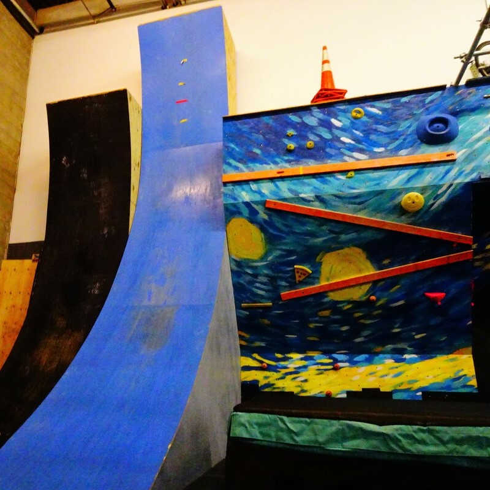
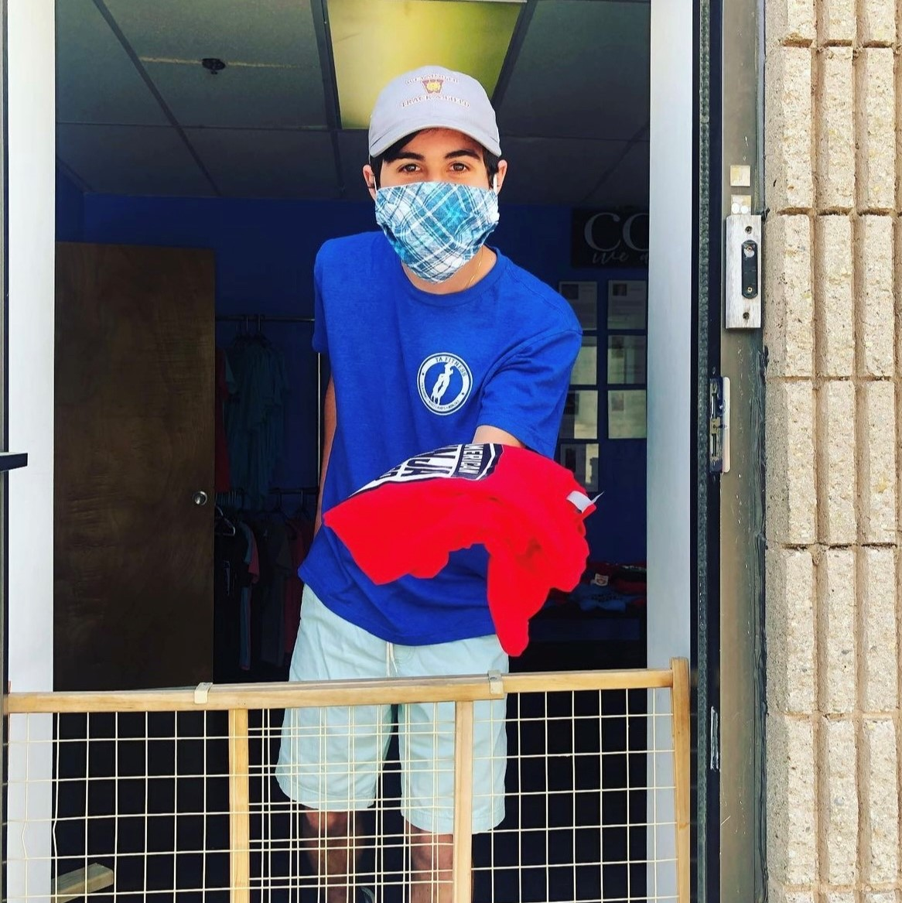
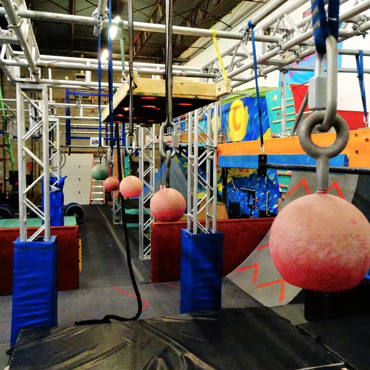

TA Fitness



What is TA Fitness?
TA Fitness is a gym that specializes in American Ninja Warrior obstacles. They have classes for everything from standard fitness classes to ninja warrior classes for those of all ages and abilities. TA Fitness also hosts competitive ninja events where people compete in a style similar to that that you would see on the show.
My role:
TA Fitness was my first job. I began working there as a sophomore in high school and continued my work through the summer after my freshman year. This included working before, through, and after covid regulations. I had a wide variety of responsibilities at TA, which included:
- Teaching classes for those of all ages and skill levels
- Running large scale competitions, make split decisions on obstacle completion while ensuring participant safety
- Live-stream and commentate course runs
- Monitoring open gym
- Hosting birthday parties